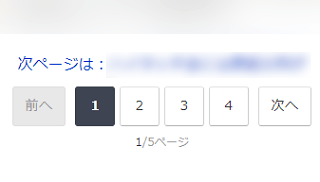
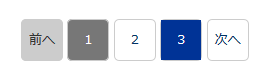
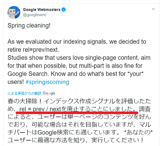

ページネーションの作り方
１ページが長文で縦長のコンテンツになってしまう場合、ページを分割して適切な長さに短くすることをおすすめします。
縦長コンテンツの場合、訪問者が最後まで閲覧する前に離脱してしまうことが多いため、記事下広告などの視認率が低下する傾向にあります。また、読まれていないページ下部のコンテンツはそもそも設置しても意味がないため、適切な長さに分割して露出度を増やすとよいでしょう。
このページを分割する際、ページネーション（pagination）やページング（paging）などと呼ばれる「ページ送り」をコンテンツ下部に設定しておくのが一般的です。
例えば、ヤフーニュースでは番号付きの内部リンクが設置されています。

また、この番号付きの内部リンクに加え、「次のページへのリンク」も設定されていることが多いです。
概ね、検索結果で使用されていますが、個人サイトの場合は「特集ページ」などの続きもののコンテンツで「1ページ目、２ページ目…」などとグループ化する使い方になるかと思います。
ページネーションのHTMLとCSSのサンプル
このページネーションの作り方には様々な方法がありますが、一番シンプルなのは「リストタグのli」を「display:inline;」で横並びにする方法です。
■「display:inline;」で作る場合
例えば、１番や２番などの内部リンクをリスト化し、これをdisplay:inline;で横並びにします。
<ul class="example">
<li>前へ</li>
<li>1</li>
<li>2</li>
<li>3</li>
<li>次へ</li>
</ul>
.example li {display:inline;}
この場合、実際にはこのように表示されます。
- 前へ
- 1
- 2
- 3
- 次へ
■背景色や枠線も付ける場合
これでは物足りない場合、paddingで間隔を空けてborderで枠線を付け、border-radiusで角を丸くしてみることをおすすめします。また、現在閲覧中のページ番号に背景色を指定する場合は任意のclass属性を付けるなどして設定します。
<ul class="example2">
<li>前へ</li>
<li class="this">1</li>
<li>2</li>
<li>3</li>
<li>次へ</li>
</ul>
.example2 li {
display: inline;
padding:10px 15px;
border:1px #ccc solid;color:#000053;
border-radius: 5px / 5px;
}
.example2 .this {background-color:#777;color:#fff;}
この場合、実際にはこのように表示されます。
- 前へ
- 1
- 2
- 3
- 次へ
■「a:hover」も指定する場合
一方、リンクをマウスでポイントした際に背景色を枠線いっぱいまで広げる際、「li」にpaddingを一括で指定してしまうと「a:hover」の分と合算されてしまいます。
そのため、「li」からはpaddingを削除し、インライン要素でありながらブロック要素的な機能をする「display: inline-block;」を「li」に指定して高さと幅を出すことをおすすめします。「display:inline;」のままではインライン要素のため、高さや幅は指定できないので注意しましょう。
最終的に「li」のリンクタグの「a」に「display:block:」を指定すれば、リンク可能な範囲を枠線いっぱいにまで広げることができます。
<ul class="example3">
<li class="pre">前へ</li>
<li class="this">1</li>
<li><a href="page-2.html">2</a></li>
<li><a href="page-3.html">3</a></li>
<li><a href="page-2.html">次へ</a></li>
</ul>
.example3 li {
display: inline-block;
height:40px;line-height:40px;
width:40px;text-align:center;
border:1px #ccc solid;color:#000053;
border-radius: 5px / 5px;
}
.example3 .pre {background-color:#ccc;color:#333;}
.example3 .this {background-color:#777;color:#fff;}
.example3 li a{display:block;text-decoration: none;}
.example3 li a:hover {color: #fff;text-decoration: none;background-color: #003396;}
この場合、カーソルを合わせた際にクリック可能な範囲が青く表示されます。

後はこのページネーションの上部に、「次のページ：ほにゃらら」のような内部リンクを設置して２ページ目に誘導しておくとよいでしょう。
ページネーションに「rel=prev/next」は必要か？
ページネーションといえば、以前までは<head>タグ内に「rel=prev/next」を設定するのが暗黙の了解でしたが、現在、Google検索では既にサポートが終了しています。

そのため、記入していても特にSEO対策上のメリットはありませんが、やはり「rel=prev/next」がないとしっくりこないので記入しておくのもよいかと思います。
書き方については、最初のページにrel=nextで「次のページ」の指定をし、最後のページにはrel=prevで「前のページ」のみを指定します。そして、その間のページでは両方を指定する形になります。
■最初のページ（rel=nextのみ）
<link rel="next" href="/page-2.html">
■２番目のページ（rel=nextとrel=prevの両方）
<link rel="next" href="/page-3.html">
<link rel="prev" href="/page-1.html">
■3番目のページ（rel=nextとrel=prevの両方）
<link rel="next" href="/page-4.html">
<link rel="prev" href="/page-2.html">
■以降のページ（rel=nextとrel=prevの両方）
上記と同様に両方を指定。
■最後のページ（rel=prevのみ）
<link rel="prev" href="/page-3.html">
上記のように、これを設置してもGoogleではサポートが終了しているため、各ページが独立したコンテンツとして扱われます。そのため、各ページでまとまりのあるコンテンツになるように分割されることをおすすめします。
ちなみに、アクセスを一番最初のページに集約する意図で<link rel="canonical"を設置して、最初のページに正規化する必要はありません。<link rel="canonical"は設定しないようにしましょう。